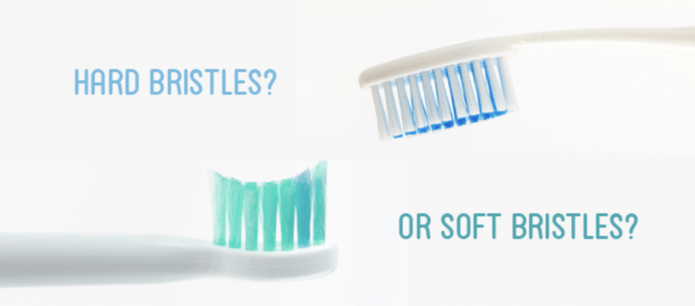
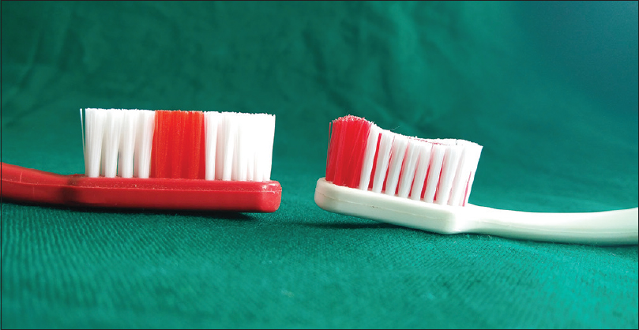

1. For most adults, the head of the toothbrush should be 1/2-inch wide, 1inch tall, and have a long enough handle to hold comfortably while brushing your teeth. Anything bigger can be difficult to reach your molars and anything smaller may not clean your teeth as effectively.
2. Toothbrushes come in three different bristle varieties: soft, medium, and hard. Soft, nylon bristles are the best and safest choice. Medium and hard bristles can actually cause more harm than good! These stiffer bristles can cause damage to your gums and enamel—especially depending on how hard you are brushing your teeth.
3. Bristles also come either rounded or straight. Rounded bristles are safer as they do not have sharp edges that can cause damage to gums and thus increase your chances for infections and inflammation.
